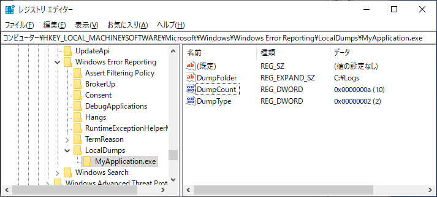

こんにちは、Japan Developer Support Core チームの松井です。
今回は、イベント ID 1000 で記録される Application Error のイベント ログについて、ログに記録されている内容の意味や、調査を進める上で一般的に必要となる情報について紹介します。
Application Error が発生する原因は様々で、原因を特定するために必要な調査手法も一様ではなく、調査には困難を伴うことが多くあります。この記事では Application Error に関して概要をお伝えしますが、お客様が開発したアプリケーションで発生しているエラーのデバッグや調査を弊社のサポート サービスで承っていますので、お困りのことがあればサポート サービスのご利用もご検討いただければ幸いです。
1. イベント ログに記録される Application Error の内容について
アプリケーションの実行中に何らかのエラーにより異常終了した場合、以下のようにイベント ログに ID 1000 のログが記録されることがあります。
障害が発生しているアプリケーション名: ConsoleApplication7.exe、バージョン: 0.0.0.0、タイム スタンプ: 0x5f9f901d
障害が発生しているモジュール名: MSVCR120.dll、バージョン: 12.0.21005.1、タイム スタンプ: 0x524f83ff
例外コード: 0xc0000409
障害オフセット: 0x000000000006dd27
障害が発生しているプロセス ID: 0x5f8
障害が発生しているアプリケーションの開始時刻: 0x01d6b0d3e99e5ff4
障害が発生しているアプリケーション パス: C:\Users\kemats\Desktop\ConsoleApplication7.exe
障害が発生しているモジュール パス: C:\Windows\SYSTEM32\MSVCR120.dll
このログが記録されている場合、”障害が発生しているアプリケーション名” に記載されているアプリケーションで何らかのエラーが発生しており、ほとんどの場合アプリケーションは異常終了しています。そのため、原因を調査し、原因に応じた適切な対処が必要になります。しかし残念ながら、イベント ログに記録されている内容のみからアプリケーション エラーの原因を特定することは一般的には難しく、多くの場合はさらに詳細な情報が必要となります。
このとき、”障害が発生しているモジュール名” に記載されているモジュールは、必ずしもアプリケーション エラーの直接の原因であるとは限らないことに注意してください。例えば上記の例では、モジュール名に MSVCR120.dll が記録されているためこの DLL の不具合によりアプリケーション エラーが発生したと捉えられがちですが、アプリケーションから DLL に渡された値に問題があって DLL からエラーを通知した場合も、イベント ログの “障害が発生しているモジュール名” には通知を行った DLL、このケースでは MSVCR120.dll が記録されます。問題がある箇所を想定する際には、記載されているモジュールだけに限定しないことが重要です。後の項でもいくつか例をご案内しますが、RaiseException 関数が呼ばれたことによりその関数を公開する kernelbase.dll がモジュール名となるケースや、ヒープの破損が検出された場合にヒープの機能を実装する ntdll.dll がモジュール名となるケースなどは、特に多くのお問い合わせをいただきます。このような場合に “障害が発生しているモジュール名” だけを根拠に kernelbase.dll や ntdll.dll の不具合と仮定して調査を進めると、ほとんどの場合、問題の原因にはたどり着けません。
“例外コード” は、アプリケーション エラーの発生の原因となった例外の種類を示しています。ただし、同じ例外コードがアプリケーションやモジュールなどによって異なる意味を持つ可能性がありますので注意してください。例えば、例外コード 0xc0000409 は STATUS_STACK_BUFFER_OVERRUN のエラー コードで、システムやランタイムがスタック領域におけるバッファー オーバーランの検出を示すことが NTSTATUS に関するドキュメント に記載されています。しかしながら、MSVCR120.dll ではランタイム関数に不正なパラメーターが渡された場合など他の原因でも例外 0xc0000409 が記録されることがあるため、上記のアプリケーション エラーのログから原因をバッファー オーバーランと断定することはできません。
“例外オフセット” は、”障害が発生しているモジュール名” に記載されているモジュール内で、例外を発生させた命令が配置されているアドレスです。この値のみでは残念ながら、どのような命令が実行されたのか、どの関数やクラス内の処理なのか、といった情報を得ることはできません。この値は、実際に実行していたモジュールと、そのモジュールがビルドされたときに同時に生成されたシンボル ファイル (*.pdb や *.dbg) が揃うことによって、実行された命令や関数などを特定することが可能になります。
2. Application Error が記録されている場合に初動の対応で必要となる情報
前述のように Application Error のログのみからは原因の特定が難しいことがほとんどですが、エラーの再現手順や条件が不明で頻度も少なく、事後に残されているログから何らかの手がかりを得ることが求められる場合や、再発時に調査を進めるための方法の検討が必要となる場合も多くあります。すべてのアプリケーションやエラーを網羅できるものではありませんが、一般的に以下のような情報があれば、Application Error の内容に対する原因の推測や調査方針の検討といった初動の対応を進めることが可能です。
エラーの発生日時と行った操作
エラーの発生日時は、ログなどから調査の範囲を特定する上で重要となります。また、エラーの発生に至った操作や手順などが分かる場合も、原因の推測や調査方針の検討を行う上で重要です。イベント ログ (Application, システム)
以下のコマンドで出力が可能です。wevtutil epl Application %userprofile%\desktop\Application.evtx
wevtutil epl System %userprofile%\desktop\System.evtx後の項でいくつか例を紹介しますが、イベント ログに記録されている Application Error 以外のエラーや警告、あるいはエラーの発生頻度なども、調査の重要な手がかりとなる可能性があります。テキスト形式やスクリーンショットで該当の Application Error のみを抜粋した場合はより少ない手がかりから調査を進めることとなるため、調査が難しくなります。
イベント ログで “障害が発生しているモジュール パス” に配置されているモジュールのコピー
障害オフセットから、エラーが発生した実行命令や関数を確認するために必要です。弊社製品以外のアプリケーションやモジュールの場合は、モジュールのビルド時に同時に生成されたシンボル ファイル (*.pdb や *.dbg) も必要となります。モジュール名とファイル バージョンが同一であっても内容が異なるモジュールが存在する可能性がありますので、弊社製品のモジュールであってもイベント ログに記録されているパスから取得することが確実です。C:\programdata\Microsoft\Windows\WER フォルダー一式
このフォルダーには、Windows Error Reporting の機能によってミニ ダンプが出力されます。ミニ ダンプには最小限の情報しか含まれていないため調査のために得られる情報は限定的ですが、事後に取得できるログなどの中では最も多くの情報が含まれています。
エラーの発生から時間が経過していない場合は、エラー発生時のミニ ダンプが残されている可能性があります。Application のイベント ログに記録されている Windows Error Reporting のソースのレコードからパスが特定できる場合がありますが、間違いがないようフォルダーごと取得することをお勧めします。アプリケーションが独自に出力しているログ
アプリケーションが独自に出力しているログも、イベント ログの内容やミニ ダンプと照らし合わせることで重要な手がかりとなる可能性があります。アプリケーションやモジュールが弊社の製品ではない場合も、処理の経過や関数の戻り値などが調査のヒントとなる場合があります。
3. 再発時の情報採取に向けての設定 (Windows Error Reporting)
Windows Vista 以降では、Windows Error Reporting の機能を利用して、Application Error のログが記録される多くの状況においてアプリケーションのクラッシュ ダンプを出力することが可能です。クラッシュ ダンプはアプリケーションが異常終了した時点におけるプロセスの状態のスナップショットで、Visual Studio や WinDbg などのツールを利用して詳細な状況を調査することが出来ます。Application Error のログが記録されている場合の多くはイベント ログの情報のみから原因を特定することができないため、調査を進めるための次のステップとして Windows Error Reporting の設定によるクラッシュ ダンプの取得を行う流れとなることが多いです。
Windows Error Reporting でクラッシュ ダンプを出力するには、以下のレジストリ設定の追加が必要です。すべてのアプリケーションを対象とする設定と、アプリケーション毎の設定が用意されています。さらに詳細な情報が必要な場合はドキュメントをご確認ください。レジストリの設定後、アプリケーションや Windows Error Reporting サービス、システムなどの再起動は不要です。
■ すべてのアプリケーションを対象とする場合
キー名: HKEY_LOCAL_MACHINE\Software\Microsoft\Windows\Windows Error Reporting\LocalDumps
| 値名 | 種類 | 設定例 | 説明 |
|---|---|---|---|
| DumpType | REG_DWORD | 2 | 出力するダンプの種類。2 はフル ダンプを示します。 |
| DumpFolder | REG_EXPAND_SZ | C:\Logs | ダンプの出力先フォルダーを指定します。 |
| DumpCount | REG_DWORD | 10 | ダンプの出力数を指定します。 指定した値を超える場合は古いファイルが上書きされます。 |

Windows Registry Editor Version 5.00
[HKEY_LOCAL_MACHINE\SOFTWARE\Microsoft\Windows\Windows Error Reporting\LocalDumps]
“DumpType”=dword:00000002
“DumpFolder”=hex(2):43,00,3a,00,5c,00,4c,00,6f,00,67,00,73,00,00,00
“DumpCount”=dword:0000000a
■ 特定のアプリケーションを対象とする場合 (例: MyApplication.exe)
キー名: HKEY_LOCAL_MACHINE\Software\Microsoft\Windows\Windows Error Reporting\LocalDumps\MyApplication.exe
※ レジストリ値の設定は全てのアプリケーションを対象とする場合と同様のため割愛します。

Windows Registry Editor Version 5.00
[HKEY_LOCAL_MACHINE\SOFTWARE\Microsoft\Windows\Windows Error Reporting\LocalDumps\MyApplication.exe]
“DumpFolder”=hex(2):43,00,3a,00,5c,00,4c,00,6f,00,67,00,73,00,00,00
“DumpCount”=dword:0000000a
“DumpType”=dword:00000002
■ すべてのアプリケーションと特定のアプリケーションのどちらを利用するべきか
すべてのアプリケーションを対象とする場合、発生している問題とは関係がないアプリケーションについてもダンプ出力の対象となり、ディスク領域の枯渇や上限数の超過によりダンプが上書きされる等の問題を引き起こす可能性があります。Application Error が他にも多数記録されている場合や、調査が必要なアプリケーション名が特定できている場合は、特定のアプリケーションのみを対象とすることをお勧めします。
また、せっかく事象が再発したにも関わらず情報が採取できなかったといったリスクは可能な限り軽減する必要があります。どちらの設定を行った場合も、意図的に Application Error を発生させるアプリケーションを作成するなどの方法により正しくクラッシュ ダンプが出力されるかテストすることを強くお勧めします。
■ Windows Error Reporting による情報採取が与える影響とクラッシュ ダンプのサイズ
Windows Error Reporting は、OS がアプリケーションで発生した例外の通知を受けて情報採取を行う動作となっており、アプリケーションの平常時には動作に影響を与えません。ただし、情報採取が完了するまではアプリケーションのプロセスが起動したままとなる点に注意が必要な場合があります。例えばアプリケーションが多重起動防止の仕組みを実装している場合、情報採取が完了するまでユーザーがアプリケーションを起動できなくなる可能性があります。通常情報採取に必要な時間は数秒から数十秒程度ですが、数十 GB の仮想メモリを使用するような大規模なアプリケーションでは数分から十数分といった時間を要する場合もありますので注意してください。
クラッシュ ダンプのサイズは、アプリケーションが利用する仮想メモリのサイズとおおよそ一致します。多くの場合数百 MB から数 GB 程度ですが、こちらも前述の例のような大規模なアプリケーションや、メモリ リークにより意図せず多くの仮想メモリが使用されているようなケースで非常に大きなサイズとなる場合があります。ログ出力先フォルダーをシステム ドライブに指定している場合は、ファイルが出力されないだけでなくディスク容量の枯渇によりシステムの動作に影響を与える可能性があるため、十分な空き容量があることを事前に確認し、必要に応じて Windows Error Reporting によるダンプ出力数の設定を行ってください。
4. Application Error が発生する例
イベント ログに記録される Application Error については、私たちのサポート チームへよくいただくお問い合わせの一つです。障害が発生するモジュールとして弊社製品の名称が記録されることから、記載されているモジュールについての不具合調査、および修正のご要望という形でお問い合わせいただくことも多くあります。
お問い合わせの中で見かける例外コードは多様ですが、いくつかの代表的な例外コードについて概要と発生するソースコードの具体例を紹介します。調査される際やお問い合わせをいただく際の参考にしていただけると幸いです。各エラーについては、今後当ブログでも調査手法などをさらに掘り下げて紹介していく予定です。
- 例外コード 0xc0000005
- 例外コード 0xc0000005 (モジュール名が unknown になる場合)
- 例外コード 0xc0000005 (mscorwks.dll または clr.dll)
- 例外コード 0xc0000374
- 例外コード 0xc0000409
- 例外コード 0xe0434352
例外コード 0xc0000005
この例外コードは STATUS_ACCESS_VIOLATION 例外の値で、アクセスできないメモリやリソースへの読み取りや書き込み、実行が OS やランタイムによって検出された場合に記録されます。以下の C++ コードでは、ヒープから割り当てたメモリの解放後に書き込みが行われることでヒープ破損が生じ、アプリケーション終了に伴うヒープの解放時に破損によって不正となったヒープのデータ構造へのアクセスが発生して 0xc0000005 が記録されます。
1 | void foo(int *ptr) |
イベント ログには以下のような Application Error が記録されます。
障害が発生しているアプリケーション名: ConsoleApplication27.exe、バージョン: 0.0.0.0、タイム スタンプ: 0x5fa18ea3
障害が発生しているモジュール名: ntdll.dll、バージョン: 10.0.19041.546、タイム スタンプ: 0xd49544eb
例外コード: 0xc0000005
障害オフセット: 0x00048a78
障害が発生しているプロセス ID: 0x4ae8
障害が発生しているアプリケーションの開始時刻: 0x01d6b20403a2a82b
障害が発生しているアプリケーション パス: C:\Users\kemats\source\repos\ConsoleApplication27\Release\ConsoleApplication27.exe
障害が発生しているモジュール パス: C:\WINDOWS\SYSTEM32\ntdll.dll
0xc0000005 が記録されている場合はイベント ログやミニ ダンプから調査を進めることが出来ないことが多くありますが、クラッシュ ダンプから例外が発生したメモリ アクセスは突き止めることが可能です。ただし上記のコードのように、実際にエラーが発生したタイミング (アプリケーション終了時) とエラーの原因となったタイミング (foo 関数内のメモリ解放と main 関数でのメモリ書き込み) は大きく離れているケースも多く、このような場合はクラッシュ ダンプからは原因の特定が困難です。この場合、再現手順の確立や別のデバッグ ツールを利用するなど、調査の進め方を検討する必要があります。
例外コード 0xc0000005 (モジュール名が unknown になる場合)
STATUS_ACCESS_VIOLATION 例外では、障害が発生しているモジュールが unknown となる場合があります。障害が発生しているモジュールは実行された命令のアドレスに基づいて記録されますが、何らかの理由で不正なアドレスの命令が実行され、そのアドレスにいずれのモジュールもロードされていなかった場合は unknown として記録されます。
例えば、以下の C++ コードを x86 ビルドし、標準入力に “aaaaaaaaaaaaaaaaaaa” の入力を与えた場合、main 関数のリターン アドレスが 0x61616161 (ASCII コード表現で “aaaa”) となって main 関数を抜けた後で実行されるアドレスが不正となり、このアドレスに何のモジュールもロードされていなかった場合はモジュール名が unknown となります。
1 |
|
イベント ログには以下のような Application Error が記録されます。
障害が発生しているアプリケーション名: ConsoleApplication26.exe、バージョン: 0.0.0.0、タイム スタンプ: 0x5fa18c75
障害が発生しているモジュール名: unknown、バージョン: 0.0.0.0、タイム スタンプ: 0x00000000
例外コード: 0xc0000005
障害オフセット: 0x61616161
障害が発生しているプロセス ID: 0xa20
障害が発生しているアプリケーションの開始時刻: 0x01d6b202e27ce34b
障害が発生しているアプリケーション パス: C:\Users\kemats\source\repos\ConsoleApplication26\Release\ConsoleApplication26.exe
障害が発生しているモジュール パス: unknown
例外コード 0xc0000005 (mscorwks.dll または clr.dll)
.NET Framework のランタイム (CLR 2.0 系は mscorwks.dll、CLR 4.0 系は clr.dll) は、ランタイム内部の処理で発生した STATUS_ACCESS_VIOLATION 例外を一旦捕捉し、処理が継続できないと判断された場合はイベント ソース “.NET Runtime” としてイベント ログを出力した上でアプリケーションを終了する場合があります。例えば以下のC# のコードは、マネージ ヒープのデータ構造が破損した場合にガベージ コレクションの処理でエラーが発生し、”.NET Runtime” のエラーでアプリケーションが終了する一例です。(このように意図的に破損させることは実際のアプリケーションではあり得ませんが、プラットフォーム相互運用や COM 相互運用などネイティブ コードとの連携におけるコーディング ミスなどで発生することが弊社へいただくお問い合わせにおいてもしばしば見られます。)
1 | using System; |
この例では、Application Error のイベント ログは以下のようになります。
障害が発生しているアプリケーション名: ConsoleApp29.exe、バージョン: 1.0.0.0、タイム スタンプ: 0x90f707e8
障害が発生しているモジュール名: clr.dll、バージョン: 4.8.4250.0、タイム スタンプ: 0x5f2a0630
例外コード: 0xc0000005
障害オフセット: 0x0010b38e
障害が発生しているプロセス ID: 0x37c
障害が発生しているアプリケーションの開始時刻: 0x01d6b1fd641ae427
障害が発生しているアプリケーション パス: C:\Users\kemats\source\repos\ConsoleApp29\bin\Debug\ConsoleApp29.exe
障害が発生しているモジュール パス: C:\Windows\Microsoft.NET\Framework\v4.0.30319\clr.dll
この場合、Application Error とともにソース “.NET Runtime”、イベント ID “1023” で以下のようなイベント ログが記録されます。
アプリケーション:ConsoleApp29.exe
フレームワークのバージョン:v4.0.30319
説明: .NET ランタイムの内部エラーのため、プロセスが中止されました IP 745FB38E (744F0000)、終了コード 80131506。
.NET ランタイムの内部エラーは、上記のようなアプリケーションのコードに起因して発生するケースだけでなく、.NET ランタイム自身の不具合によっても発生する可能性もあります。このエラーは調査が非常に難しく、調査を進めるためには再現手順を確立することが重要となります。
例外コード 0xc0000374
この例外コードは STATUS_HEAP_CORRUPTION 例外の値で、OS やランタイムがヒープ破損を検出した場合に記録されます。malloc 関数や new 演算子で確保したヒープ領域のメモリにおけるバッファー オーバーランや 2 重解放、解放後のメモリ使用などが典型的な原因として挙げられます。以下は例外コード 0xc0000374 が発生する C++ コードの例です。
1 | void bar(int *ptr) |
この場合、障害が発生しているモジュールは以下のように ntdll.dll となります。
障害が発生しているアプリケーション名: ConsoleApplication23.exe、バージョン: 0.0.0.0、タイム スタンプ: 0x5fa17177
障害が発生しているモジュール名: ntdll.dll、バージョン: 10.0.19041.546、タイム スタンプ: 0xd49544eb
例外コード: 0xc0000374
障害オフセット: 0x000e6763
障害が発生しているプロセス ID: 0x2fa0
障害が発生しているアプリケーションの開始時刻: 0x01d6b1f2a0c86f53
障害が発生しているアプリケーション パス: C:\Users\kemats\source\repos\ConsoleApplication23\Release\ConsoleApplication23.exe
障害が発生しているモジュール パス: C:\WINDOWS\SYSTEM32\ntdll.dll
あくまでもヒープの処理を実装している ntdll.dll がヒープ破損を検知したためモジュール名として記録されている状況で、このケースでは ntdll.dll の不具合ではなくアプリケーションのコードに問題があります。ただし、ヒープの問題はアプリケーションで非常に一般的な問題ですので、ヒープ破損が記録されている場合は調査範囲を特定のモジュールやアプリケーションに限定せず、ページ ヒープを有効にするなどヒープの問題に適した方法で調査を進めることが重要です。
なお、ヒープ破損が発生している場合は 0xc0000374 以外に 0xc0000005 のエラーが発生する可能性がありますので注意してください。OS やランタイムがヒープの破損を検知した場合は 0xc0000374 のエラーが、ヒープの破損を検知できず不正な状態のヒープのデータ構造へのアクセスが発生した場合は 0xc0000005 のエラーが発生します。
例外コード 0xc0000409
この例外コードは STATUS_STACK_BUFFER_OVERRUN のエラー コードで、一般的にはシステムやランタイムがスタック領域におけるバッファー オーバーランの検出を示しています。Visual C++ アプリケーションでは、バッファー オーバーランに限らず実行が継続できないエラーをランタイムが検出した場合に様々な状況でこのエラー コードが記録される可能性があります。以下は例外コード 0xc0000409 が発生する C++ コードの例です。
1 |
|
以下は Visual Studio 2015 以降でビルドした場合の例ですが、Visual Studio のバージョンやランタイムのリンク方法によってモジュール名が異なる可能性があります。
障害が発生しているアプリケーション名: ConsoleApplication22.exe、バージョン: 0.0.0.0、タイム スタンプ: 0x5fa16ece
障害が発生しているモジュール名: ucrtbase.dll、バージョン: 10.0.19041.546、タイム スタンプ: 0x73123758
例外コード: 0xc0000409
障害オフセット: 0x0009d112
障害が発生しているプロセス ID: 0x424c
障害が発生しているアプリケーションの開始時刻: 0x01d6b1f11424c381
障害が発生しているアプリケーション パス: C:\Users\kemats\source\repos\ConsoleApplication22\Release\ConsoleApplication22.exe
障害が発生しているモジュール パス: C:\WINDOWS\System32\ucrtbase.dll
なお、例外コードが 0xc0000409 となることは Visual C++ の想定された動作で、ランタイムが実行を継続できないエラーを検知した場合は __failfast 関数が呼び出されることに起因しています。__fastfail 関数にはさらにエラーの種類を示すサブ コード 5 (FAST_FAIL_INVALID_ARG) が指定されますが、この値は Application Error のログには出力されず、後続の Windows Error Reporting のイベント ログで以下のように P9 の値として出力されます。
問題の署名:
P1: ConsoleApplication22.exe
P2: 0.0.0.0
P3: 5fa16ece
P4: ucrtbase.dll
P5: 10.0.19041.546
P6: 73123758
P7: 0009d112
P8: c0000409
P9: 00000005
P10:
サブ コードには以下をはじめとする様々な種類があり、Windows SDK の winnt.h で定義されています。
#define FAST_FAIL_LEGACY_GS_VIOLATION 0
#define FAST_FAIL_VTGUARD_CHECK_FAILURE 1
#define FAST_FAIL_STACK_COOKIE_CHECK_FAILURE 2
#define FAST_FAIL_CORRUPT_LIST_ENTRY 3
#define FAST_FAIL_INCORRECT_STACK 4
#define FAST_FAIL_INVALID_ARG 5
#define FAST_FAIL_GS_COOKIE_INIT 6
#define FAST_FAIL_FATAL_APP_EXIT 7
…
winnt.h は、Windows 10 SDK の場合 C:\Program Files (x86)\Windows Kits\10\Include\10.x.x.x\um\winnt.h にインストールされています。
例外コード 0xe0434352
この例外コードは EXCEPTION_COMPLUS のエラー コードで、.NET Framework / .NET Core アプリケーション内で発生した例外やエラーはこの例外コードにマッピングされ、kernelbase.dll の RaiseException 関数が呼び出されることによって OS へ通知されます。以下は例外コード 0xe0434352 が発生する C# コードの例です。
1 | using System; |
障害が発生しているアプリケーション名: ConsoleApp27.exe、バージョン: 1.0.0.0、タイム スタンプ: 0xd6688933
障害が発生しているモジュール名: KERNELBASE.dll、バージョン: 10.0.19041.572、タイム スタンプ: 0x979ddb1d
例外コード: 0xe0434352
障害オフセット: 0x00129ab2
障害が発生しているプロセス ID: 0x2064
障害が発生しているアプリケーションの開始時刻: 0x01d6b1f36899e46b
障害が発生しているアプリケーション パス: C:\Users\kemats\source\repos\ConsoleApp27\bin\Debug\ConsoleApp27.exe
障害が発生しているモジュール パス: C:\WINDOWS\System32\KERNELBASE.dll
この場合、直前にソース “.NET Runtime”、イベント ID “1026” で以下のようなイベント ログも出力されます。こちらの例外情報から手がかりが得られる可能性があるため、Application Error に限定せず他のイベント ログも取得して確認することが重要となります。
アプリケーション:ConsoleApp27.exe
フレームワークのバージョン:v4.0.30319
説明: ハンドルされない例外のため、プロセスが中止されました。
例外情報:System.Exception
場所 ConsoleApp27.Program.Main(System.String[])
本ブログの内容は弊社の公式見解として保証されるものではなく、開発・運用時の参考情報としてご活用いただくことを目的としています。もし公式な見解が必要な場合は、弊社ドキュメント (https://docs.microsoft.com や https://support.microsoft.com) をご参照いただくか、もしくは私共サポートまでお問い合わせください。